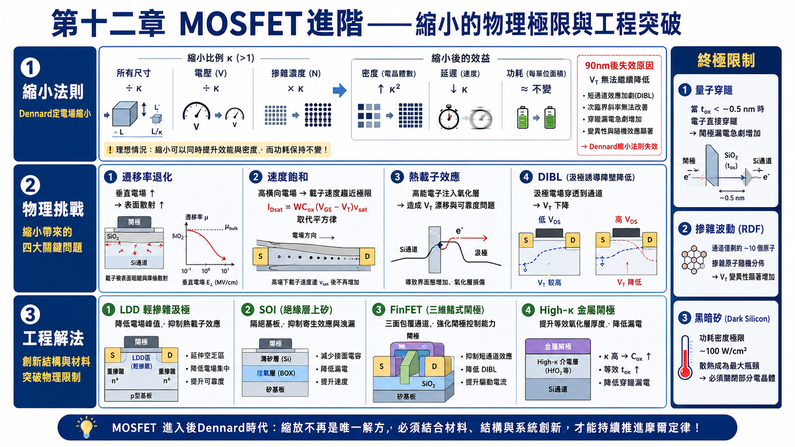
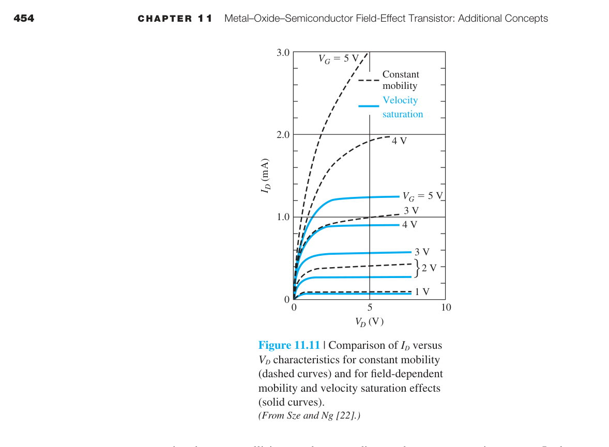
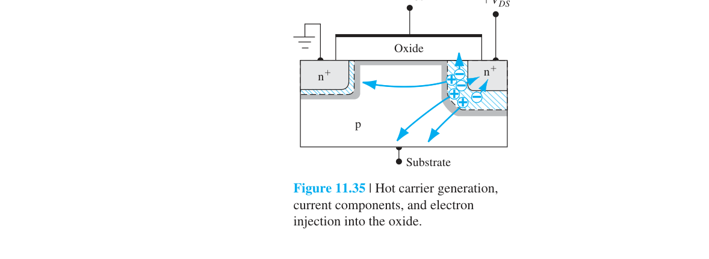
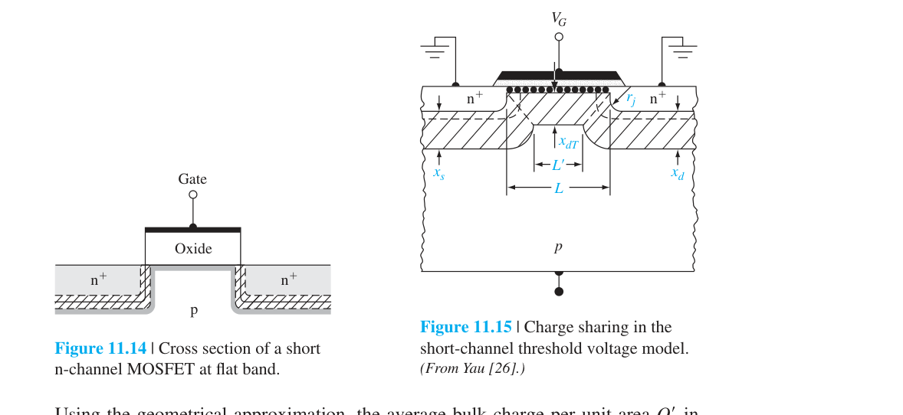

MOSFET 進階概念
11.0 本章預覽
第十章建立了 MOSFET 的理想模型——長通道、均勻摻雜、無短通道效應。這個理想模型對於理解 MOSFET 的基本原理至關重要。但任何嘗試過用長通道公式來預測現代奈米級 MOSFET 行為的人都會立刻發現：理想模型完全不準。
本章討論讓理想模型失效的所有效應——以及克服它們的工程解決方案。這些非理想效應不是學術好奇心；它們是每天困擾著晶片設計者和製程工程師的實際問題。每一個效應背後都有一個對應的製程解決方案（LDD、SOI、high-κ、FinFET）——了解這些方案需要先了解它們要解決的問題。
🧭 本章推理地圖
- 長通道假設失效產生非理想傳輸（§11.1）
- 縮放律預測尺寸、速度與功耗變化（§11.2）
- 二維靜電改變臨界電壓（§11.3）
- 高場帶來崩潰與可靠度工程（§11.4）
- 輻射與熱電子在介電層留下長期電荷（§11.5）

11.2.1 定電場縮小法則——Moore 定律的物理基礎 ⭐
定電場縮放使單顆延遲降低、密度提高，同時理想功耗密度保持近似不變。
其成立前提是供應電壓能隨尺寸同步下降，這在低電壓時受到次臨界斜率限制。
📝 自編概念例：延遲縮放
題目：理想 $\kappa=2$。
解：延遲按 $1/\kappa$。
答案：單級延遲減半。

1965 年，Gordon Moore 觀察到積體電路上的電晶體數量大約每兩年翻一倍。但這條著名的「定律」如果沒有物理上的可行性論證，就只是一條經驗曲線。1974 年，Robert Dennard 發表了定電場縮小法則——論證了MOSFET 可以持續縮小而不會遭遇根本性的物理障礙。
核心思想：如果你把電晶體的所有尺寸（$L$, $W$, $t_{ox}$）和所有電壓（$V_{DD}$, $V_T$）同時除以同一個因子 $\kappa$，並把基板摻雜增加 $\kappa$ 倍，那麼：
- 內部電場保持不變（因為電壓和距離以相同比例縮小）→可靠性不受影響
- 每單位面積的電晶體數量增加 $\kappa^2$ 倍→密度平方增長
- 每個電晶體的延遲時間縮短 $\kappa$ 倍→速度提升
- 每個電晶體的功耗降低 $\kappa^2$ 倍（$C\propto1/\kappa$、$V\propto1/\kappa$、$f\propto\kappa$），而密度增加 $\kappa^2$ 倍，因此理想功耗密度約維持不變；後來電壓無法等比例降低，功耗密度才成為瓶頸
| 參數 | 縮小因子 | 實際效益 |
|---|---|---|
| $L, W, t_{ox}$ | $1/\kappa$ | 尺寸縮小 |
| $V_{DD}, V_T, V_{DS}$ | $1/\kappa$ | 電壓降低→功耗降低 |
| $N_a$（基板摻雜） | $\kappa$ | 保持空乏層寬度同步縮小 |
| 延遲時間 $\tau$ | $1/\kappa$ | 速度提升 $\kappa$ 倍 |
| 功耗 $P$ | $1/\kappa^2$ | ⭐ 功耗急劇降低 |
| 功率-延遲積 | $1/\kappa^3$ | 整體性能指標大幅改善 |
| 密度 | $\kappa^2$ | 每晶片電晶體數量平方增加 |
為什麼 $N_a$ 必須增加？空乏層寬度 $x_d\propto1/\sqrt{N_a}$。當 $L$ 縮小 $\kappa$ 倍時，空乏層寬度也必須同步縮小——否則空乏區會延伸到通道中不該延伸的地方（例如源極和汲極的空乏區在通道下方相遇→產生穿通效應）。增加 $N_a$ 使 $x_d$ 縮小至所需的尺寸。
Dennard 縮小失效後，$V_{DD}$ 不再能隨 $L$ 同步縮小（從 ∼1 V 降到 ∼0.7 V 後就卡住了）。但 $L$ 繼續縮小→內部電場增大→速度飽和、熱載子效應加劇→每代新製程的性能提升幅度從之前的 ∼40% 降到 ∼10–15%。這就是為什麼 Moore 定律在放緩——不是因為電晶體不能再縮小，而是因為縮小不再帶來同等的性能回報。
11.1.3 遷移率變化——當閘極壓得太緊
第十一章假設反轉層中的載子遷移率 $\\mu_n$ 為常數（等於塊材中的低電場遷移率）。現實中，當 $V_{GS}$ 增大時，垂直於通道方向的電場（從閘極指向基板）將反轉層中的電子壓向 Si/SiO₂ 界面。這個界面不是原子級平坦的——存在約 0.2–0.5 nm RMS 的粗糙度。載子被壓在粗糙界面上→界面粗糙度散射增加→有效遷移率下降。
$\theta$（遷移率退化因子）取決於氧化層厚度（$t_{ox}$ 越小→垂直電場越大→$\theta$ 越大）和界面品質。典型值 ∼0.1–0.5 V⁻¹。當 $V_{GS}-V_T=2$ V 且 $\theta=0.3$ 時，$\mu_{\text{eff}}=\mu_0/1.6=0.625\mu_0$——遷移率下降了近 40%。
物理機制——不只是界面粗糙度：除了界面粗糙度散射，垂直電場還會改變載子在反轉層中的量子侷限狀態。反轉層極薄（∼1–5 nm），電子在垂直方向的運動被量子化為離散的次能帶（subbands）。垂直電場越大→電子被壓得越緊→量子侷限越強→最低次能帶的能量升高→更多的電子佔據較高有效質量的次能帶→遷移率進一步下降。這是「表面粗糙度散射+量子侷限效應」的協同作用。
常用緊湊模型以有效遷移率隨垂直有效電場下降的經驗式描述此效應。
遷移率退化使高閘極過驅下的電流與跨導低於理想平方律預測。
📝 自編概念例：跨導趨勢
題目：過驅提高但有效遷移率下降。
解：兩效應互相抵消。
答案：$g_m$ 增幅小於常數遷移率模型。
11.1.4 速度飽和——短通道元件最根本的限制
第十一章的長通道模型中，$I_D$ 的平方律來自一個關鍵假設：載子漂移速度與電場成正比（$v_d=\mu_n E$）。這個假設在電場低於 ∼$10^4$ V/cm 時成立。但在短通道元件中——以 $L=20$ nm、$V_{DS}=1$ V 為例——通道中的平均電場高達 $5\times10^5$ V/cm。在這個電場強度下，載子已經遠遠進入速度飽和區（$v_d\approx v_{\text{sat}}\approx10^7$ cm/s，見第五章圖 5.8）。
速度飽和對 $I_D$ 的影響是質變而非量變。當載子以 $v_{\text{sat}}$ 穿越整個通道時：

速度飽和的三個連鎖後果：
① $I_D$ 變為線性而非平方律。$I_D$ 不再隨 $(V_{GS}-V_T)^2$ 增長，而只隨 $(V_{GS}-V_T)$ 線性增長→給定 $V_{GS}$ 下的驅動電流顯著降低。這直接影響了數位電路的開關速度。
② $g_m$ 趨向常數。在長通道飽和區：$g_m=\mu_n C_{ox}(W/L)(V_{GS}-V_T)$→隨 $V_{GS}$ 線性增長。在速度飽和極限：$g_m = WC_{ox}v_{\text{sat}}$→常數——加大 $V_{GS}$ 不再能提高跨導。這對類比放大器設計是災難性的——增益 $A_v=-g_m R_L$ 被固定上限。
③ 飽和提前發生。在長通道中，飽和發生在 $V_{DS}=V_{GS}-V_T$（夾止條件）。在速度飽和極限下，載子在通道中途（$V\ll V_{GS}-V_T$ 處）就已達到 $v_{\text{sat}}$→飽和發生在 $V_{DS}$ 遠小於 $V_{GS}-V_T$ 時→可用的電壓餘裕（voltage headroom）被壓縮。
📝 自編概念例：臨界電場
題目：$v_{sat}=10^7$ cm/s、$\mu=500$ cm²/V·s。
解：$E_c=v_{sat}/\mu$。
答案：約 $2\times10^4$ V/cm。
11.5.3 熱電子充電效應——高速電子的破壞力
📝 自編概念例：應力後參數
題目：高汲壓應力後 $V_T$ 上升且 $g_m$ 下降。
解：界面與氧化層捕獲電荷增加。
答案：符合熱電子充電退化。
在短通道元件中，即使 $V_{DS}$ 只有 1 V，汲極端的峰值電場也可達 $>10^5$ V/cm。電子在汲極端空乏區中被這個高電場加速→獲得遠高於熱平衡（$kT=0.026$ eV）的動能——成為「熱」載子。某些電子的能量可達數 eV。
熱載子能造成三種破壞：
① 注入氧化層。電子要從 Si 的導帶進入 SiO₂ 的導帶，需要克服 ∼3.1 eV 的能障。熱載子的能量夠高→可以直接越過這個能障進入氧化層。注入的電子在氧化層中移動，可能被氧化層中的缺陷（氧空缺等）捕獲→形成固定電荷→$V_T$ 漂移。這是長期操作中 $V_T$ 不穩定的主要原因。
② 產生界面態。高能電子撞擊 Si/SiO₂ 界面→打斷 Si-H 鍵（鈍化鍵）→產生懸鍵（dangling bond）→這些懸鍵形成能隙中的界面態。界面態會捕捉和釋放通道中的載子→$g_m$ 退化、次臨界斜率劣化、低頻雜訊增加。
③ 氧化層崩潰。長期累積的注入和陷阱充電最終導致氧化層局部電場超過 SiO₂ 的介電強度（∼$10^7$ V/cm）→氧化層永久性擊穿→閘極短路。
輕摻雜汲極（LDD）——對抗熱載子的工程解決方案

LDD 的核心思想：在通道和重摻雜 n⁺ 汲極之間插入一段輕摻雜的 n⁻ 區域。n⁻ 區域的空間電荷密度低→Poisson 方程積分出的電場曲線更平緩→峰值電場降低。LDD 結構中的峰值電場可以從 ∼$5\times10^5$ V/cm 降到 ∼$3\times10^5$ V/cm。因為熱載子注入率對電場有極強的超線性依賴（$\propto e^{-E_0/E}$），電場降低 40% 可以使元件壽命延長數個數量級。
現代延伸 A：SOI、FinFET 與先進 CMOS 結構
SOI——把電晶體放在絕緣體上
在傳統塊材（bulk）MOSFET 中，通道和汲極與基板之間存在 pn 接面→寄生接面電容 $C_{j,DB}$、接面漏電流、以及基板效應（body effect：$V_{SB}$ 增加會使 $V_T$ 增加）。SOI 技術在通道下方放置一層埋入氧化層（Buried Oxide, BOX, 通常 ∼100–200 nm 厚的 SiO₂）→通道完全被絕緣體包圍→消除所有寄生接面。
SOI 的優勢：寄生電容降低 30–50%→開關速度更快、動態功耗更低；接面漏電流消失→待機功耗降低；基板效應消失→$V_T$ 不受 $V_{SB}$ 調變；抗軟錯誤（soft error）能力增強（埋入氧化層阻擋 α 粒子從封裝材料進入通道）。
FinFET——從平面到三維的革命
在平面 MOSFET 中，閘極只從上方控制通道。當 $L_g$ 縮小到 ∼20 nm 以下時，源極和汲極的電場從通道下方（基板側）繞過——閘極失去了對通道底部區域的控制。這些不受控的區域成為次臨界漏電流的路徑。FinFET 把通道豎起來變成一個矽「鰭」→閘極從三面包圍鰭（上方+左右兩側）→閘極的靜電控制力大幅增強→短通道效應被有效抑制。這是為什麼 $L_g$ 能從 20 nm（平面 MOSFET 的極限）繼續縮小到 5 nm 以下的關鍵技術。
GAAFET（閘極全環繞）：FinFET 的下一步進化——通道變成水平奈米線或奈米片，閘極完全環繞通道四面。這實現了終極的靜電完整性。Samsung 2022 年發布了 3 nm GAAFET 製程，TSMC 預計在 2 nm 節點（2025）引入。
📝 自編概念例 — FinFET 優勢
三面閘包覆鰭狀通道，閘控增強，抑制 DIBL 與短通道 roll-off。
現代延伸 B：終極尺寸的物理限制——我們能縮到多小？
Moore 定律不可能永遠持續。本節討論限制 MOSFET 繼續縮小的根本物理障壁——這些不是工程問題（可透過更聰明的設計克服），而是物理定律設定硬性限制。
氧化層的量子穿隧限制
SiO₂ 氧化層的厚度不能小於 ∼0.5 nm（約兩個分子層）。當 $t_{ox}<1$ nm 時，直接量子穿隧（direct tunneling）導致閘極漏電流密度呈指數增長：$J_G \propto e^{-t_{ox}\sqrt{2m^*\phi_B}/\hbar}$。對 $t_{ox}=1.5$ nm→$J_G\sim1$ A/cm²；$t_{ox}=0.8$ nm→$J_G\sim10^3$ A/cm²→閘極漏電功耗超過通道導通功耗→電晶體失去意義。high-κ 材料（HfO₂, $\kappa\sim25$）可以物理厚度 5 nm 達到等效 0.8 nm 的電容→穿隧漏電降低 ∼$10^4$ 倍。但當等效厚度也縮到 ∼0.5 nm 時，穿隧限制再次出現。
摻雜波動（Random Dopant Fluctuation, RDF）
在 $L_g=10$ nm 的 MOSFET 中，通道體積約為 $10\times10\times10$ nm³ $=10^{-18}$ cm³。若 $N_a=10^{18}$ cm⁻³→通道中僅有 ∼10 個摻雜原子。這 10 個原子的確切數量和位置因每個電晶體而異（Poisson 統計→標準差 $\sqrt{10}\approx3$）→每個電晶體的 $V_T$ 都不同。在一個有 100 億個電晶體的晶片上，$V_T$ 的統計分布寬度可達 ∼50–100 mV——大到足以破壞 SRAM 單元的讀寫穩定性和邏輯時序。
功耗密度——黑暗矽（Dark Silicon）
即使每個電晶體的功耗隨縮小而降低，但密度以 $\kappa^2$ 增長→每單位面積的總功耗可能增加。現代高效能晶片的功耗密度已接近 ∼100 W/cm²——接近核反應爐的熱通量。散熱能力（空冷∼50 W/cm²，液冷∼200 W/cm²）限制了能同時全速運行的電晶體比例。這就是「黑暗矽」現象——晶片上有大比例的電晶體必須關閉或降頻以避免過熱。
11.3.2 窄通道效應（Narrow-Channel Effects）
短通道效應是通道長度縮小的問題。通道寬度縮小同樣帶來效應——窄通道效應。當 $W$ 縮小到與空乏區寬度可比時，閘極邊緣的電場線「繞射」到通道側面的空乏區中→需要額外的閘極電壓來覆蓋側面空乏電荷→$V_T$ 升高。
與短通道效應（$V_T$ 下降）相反，窄通道效應使 $V_T$ 上升。在現代 FinFET 中，通道是三維的鰭片（fin），$W$ 的定義不再是簡單的平面寬度，而是鰭片高度×2+鰭片寬度——窄通道效應的物理圖像需要重新理解。
📐 例題 — 閘氧穿隧
$t_{ox}$ 過薄時 $J_G\propto\exp(-t_{ox}\sqrt{2m^*\phi_B}/\hbar)$ 急增；high-κ 以較厚物理層達等效電容。
11.1.5 彈道傳輸——當通道比平均自由程還短
在傳統的漂移-擴散模型中，載子在通道中經過多次散射（碰撞）才從源極到達汲極。平均自由程 $\ell = v_{th}\tau \approx 10$–$50$ nm（室溫 Si）。當通道長度 $L$ 縮小到與 $\ell$ 可比（$L < 50$ nm）時，載子可能在不經過任何散射的情況下從源極飛到汲極——這就是彈道傳輸。
平均自由程的數值計算：$\ell = v_{th}\tau$。Si 中 $\mu_n = 300$ cm²/V·s（短通道中的有效遷移率）→$\tau = m^*\mu/e = 0.26\times9.11\times10^{-31}\times300\times10^{-4}/(1.6\times10^{-19}) \approx 4.4\times10^{-14}$ s。$v_{th} = \sqrt{8kT/(\pi m^*)} \approx 2.3\times10^7$ cm/s。$\ell = 2.3\times10^7\times4.4\times10^{-14} \approx 10$ nm。所以 $L < 10$ nm 的通道確實進入彈道區域。
在完全彈道極限下，$I_D$ 不再受通道中的散射限制，而是受源極端的熱離子注入率限制——就像蕭特基二極體的 thermionic emission。飽和電流：
其中 $v_{\text{inj}} \approx v_{th}/2$（注入速度≈熱速度的一半）。對 Si，$v_{th}\sim10^7$ cm/s→$v_{\text{inj}}\sim5\times10^6$ cm/s。這比速度飽和的 $v_{sat}\sim10^7$ cm/s 還低——所以彈道傳輸在 Si 中不一定比速度飽和更優。但在高遷移率材料（如 InGaAs，$v_{th}$ 更高）中，彈道傳輸可能是突破速度瓶頸的途徑。
彈道極限下電流由接觸可注入的量子態與注入速度控制，而不是局部遷移率。
📝 自編概念例：判斷傳輸區域
題目：$L$ 與平均自由程相近。
解：載子只經歷少數散射。
答案：屬準彈道傳輸。
11.3.1 短通道效應——當 $L$ 不再「長」
📝 自編概念例：DIBL
題目：汲壓增加使提取的 $V_T$ 降低。
解：汲極電場降低源端勢壘。
答案：這是 DIBL 的典型表徵。
長通道 MOSFET 的理想公式（$V_T$ 與 $L$ 無關、$I_D$ 飽和後平坦）在通道縮短後開始失效。源極與汲極空乏區進入通道，分攤原本應由閘極控制的空乏電荷，這是第四版 §11.3.1 所討論短通道臨界電壓降低的核心。

電荷共享與 DIBL
通道越短，源汲接面分攤的空乏電荷比例越大，臨界電壓便隨 $L$ 縮短而下降。提高 $V_{DS}$ 還會使汲極電場向源極方向延伸並降低源端注入能障，形成汲極引發能障降低（DIBL），使關閉電流增加。
短通道臨界電壓模型必須求解二維 Poisson 方程；長通道 MOS 電容的一維公式不足以描述源極、汲極與閘極的共同控制。基板摻雜、接面深度、氧化層厚度及通道長度都會影響電荷共享程度。
次臨界斜率
實際 MOSFET 在 $V_{GS}<V_T$ 時仍有擴散主導的次臨界電流。常用斜率定義為：
室溫下理想極限約為 60 mV/dec；$C_d/C_{ox}$、介面態及短通道耦合都會使實際斜率變大。斜率越大，同一閘極電壓範圍內可壓低的關閉電流越少。
11.4.3 離子植入閾值調整
📝 自編概念例：植入劑量增加
題目：p 型通道調整植入增加。
解：強反轉需平衡更多空乏電荷。
答案：nMOS $V_T$ 通常提高。
$V_T$ 的精確控制對數位電路至關重要——同一晶片上的所有 nMOS 必須有相同的 $V_T$。$V_T$ 取決於 $N_a$（基板摻雜）和 $C_{ox}$（氧化層厚度），但這些參數的製程控制精度有限。
離子植入（Ion Implantation）是精確調整 $V_T$ 的標準方法：在通道表面下方植入一層極薄的摻雜層（通常用 B 對 nMOS，P 或 As 對 pMOS）。植入劑量 $Q_I$（atoms/cm²）直接改變 $V_T$：
植入深度（由離子能量決定）必須在反轉層形成的位置附近——太深則對 $V_T$ 無效，太淺則影響載子遷移率。典型的調整範圍：$\pm 100$–$300$ mV，植入劑量 $10^{12}$–$10^{13}$ cm$^{-2}$。
植入能量與深度的關係：離子進入 Si 後會與晶格原子碰撞而減速。投影射程 $R_p$（平均停止深度）取決於離子能量和質量：
| 離子 | 能量 (keV) | $R_p$ (nm) | 用途 |
|---|---|---|---|
| B（硼） | 10 | ∼30 | 淺接面 $V_T$ 調整 |
| B（硼） | 50 | ∼150 | 標準 $V_T$ 調整 |
| P（磷） | 50 | ∼60 | nMOS $V_T$ 調整 |
| As（砷） | 50 | ∼30 | 極淺 S/D 擴展 |
退火（Annealing）：植入過程會嚴重破壞晶格（每個離子撞出數千個 Si 原子）→必須在 900–1100°C 退火來修復晶格損傷並活化摻雜原子。現代製程使用快速熱退火（RTA，∼1 秒）或雷射退火（毫秒級）以防止摻雜原子過度擴散。
11.5 補充：輻射與熱載子效應總覽
除了前節討論的熱載子效應（通道中的高能電子注入氧化層），輻射環境也會在氧化層中產生電荷。
輻射效應的兩種類型：
① 總劑量效應（TID, Total Ionizing Dose）：累積的輻射劑量在氧化層中產生永久性電荷。$\gamma$ 射線或質子撞擊 SiO₂→產生電子-電洞對。電子很快被掃出（$\sim10^{-5}$ cm²/V·s），但電洞被陷阱捕獲（$\sim10^{-11}$ cm²/V·s）→形成正的固定氧化層電荷→$V_{FB}$ 負移→$V_T$ 下降。典型漂移量：
| 輻射劑量 (rad(Si)) | $\Delta V_T$（未加固） | $\Delta V_T$（加固後） |
|---|---|---|
| 100 | ∼50 mV | < 10 mV |
| 10k | ∼1 V | ∼100 mV |
| 100k | 元件失效 | ∼500 mV |
② 單一事件效應（SEE, Single Event Effects）：高能粒子（宇宙射線中的重離子或質子）穿過電晶體→沿路產生大量電子-電洞對→瞬間電流脈衝。可能導致：SEU（單一事件翻轉，SRAM 位元翻轉→軟錯誤）、SEL（單一事件鎖定，觸發寄生 SCR→大電流→永久損壞）、SEB（單一事件崩潰，功率元件中）。
抗輻射設計方法：
- 薄氧化層（$<10$ nm）：減少電洞陷阱數量→TID 敏感度降低。
- SOI 結構：埋入氧化層消除體矽中的寄生路徑→抗 SEL。
- 特殊的退火處理（含氫退火→減少界面態）。
- 三模冗餘（TMR）：三個 SRAM 單元投票→容忍 SEU。
- 矽化物閘極取代多晶矽閘極：消除空乏區中的電荷陷阱。
📝 自編概念例 — TID 效應
累積輻射在氧化層產生正固定電荷 → $V_{FB}$ 負移 → $V_T$ 下降。
11.1.1 次臨界導電
臨界電壓以下沒有強反轉通道，但表面仍存在少量電子，可由源極向汲極擴散。
次臨界電流近似隨閘極電壓呈指數增加，因此 MOSFET 不是真正的理想開關。
次臨界斜率 $S$ 表示電流增加十倍所需閘極電壓，室溫理想極限約 60 mV/dec。
空乏電容與界面態電容削弱閘極控制，使實際 $S$ 大於熱力學極限。
降低 $V_T$ 可提升速度，卻會指數增加關閉漏電，形成低功耗設計核心取捨。
📝 自編概念例：十倍漏電
題目：$S=80$ mV/dec，閘壓增加 160 mV。
解：跨越兩個 decade。
答案：電流約增加 100 倍。
11.1.2 通道長度調變
長通道理想模型假設飽和後夾止點固定，因此汲極電流不再隨 $V_{DS}$ 改變。
實際增加汲極電壓會擴大汲端耗盡區，使夾止點向源極移動。
有效通道長度由 $L$ 減為 $L-\Delta L$，相同通道電荷下電流因而增加。
一階模型寫成 $I_D\approx I_{D,sat}(1+\lambda V_{DS})$，其輸出電阻約為 $r_o=1/(\lambda I_D)$。
通道越短，固定耗盡區變化占總長度比例越大，通道長度調變通常越明顯。
📝 自編概念例：輸出電阻
題目：$I_D=0.5$ mA、$\lambda=0.04$ V$^{-1}$。
解：$r_o=1/(\lambda I_D)$。
答案：約 50 kΩ。
11.2.2 臨界電壓的第一近似
定電場縮放要求所有垂直與橫向尺寸除以比例因子 $\kappa$，供應與端點電壓也同除。
為使空乏寬度同步縮小，基板摻雜濃度需乘以 $\kappa$。
第一近似下臨界電壓也按 $1/\kappa$ 縮小，才能保留相似的反轉與電場分布。
但 $V_T$ 降低會指數增加次臨界漏電，且熱電壓 $kT/q$ 不會隨幾何縮放。
因此現代製程無法無限遵守理想比例，必須在速度、漏電與雜訊容限間折衷。
📝 自編概念例：理想縮放
題目：$\kappa=2$，原 $V_T=0.6$ V。
解：第一近似按 $1/\kappa$。
答案：新 $V_T\approx0.3$ V。
11.2.3 廣義縮放
廣義縮放允許尺寸與電壓使用不同縮放因子，以描述供應電壓無法同步下降的實際情況。
若尺寸縮得比電壓快，內部電場會增加，速度可能先提升但可靠度與熱效應惡化。
電容、電流、延遲與功耗的縮放律需分別由幾何與電壓因子重新推導。
速度飽和使電流不再遵循長通道平方律，動態功耗密度也可能隨整合度上升。
廣義縮放因此是理解 Dennard scaling 結束後製程演進的較實用框架。
📝 自編概念例：電場趨勢
題目：長度減半而電壓只降 20%。
解：電場比值為 $0.8/0.5=1.6$。
答案：平均電場增加 60%。
11.3.2 窄通道效應
通道寬度足夠大時，中央區域可近似一維 MOS 電容；縮窄後邊緣耗盡區占比增加。
場氧化層或隔離結構附近的電場線向側面展開，使閘極還需平衡額外邊緣電荷。
因此傳統平面 MOSFET 的臨界電壓可能隨通道寬度減小而提高。
效應大小取決於隔離幾何、場區摻雜、氧化層厚度及通道寬度。
窄通道效應與短通道效應方向可能不同，設計模型必須同時處理長與寬的二維影響。
📝 自編概念例：邊緣占比
題目：固定兩側邊緣寬度，總通道寬度縮小。
解：邊緣區占總寬度比例上升。
答案：邊緣耗盡對 $V_T$ 的影響增強。
11.4.1 崩潰電壓
提高汲極電壓會在汲極–基板接面形成強電場，載子可能撞擊游離並引發雪崩。
短通道元件中，源汲耗盡區可能在基板內相互接近，造成 punch-through 電流。
薄閘極介電層也承受垂直電場，超過材料極限可能導致軟崩潰或永久擊穿。
提高耐壓通常需要較低摻雜、更長漂移區或電場整形，但會增加導通電阻與面積。
崩潰規格因此不是單一接面參數，而是接面、通道與介電層共同限制。
📝 自編概念例：電場整形
題目：為何漂移區降低摻雜可提高耐壓？
解：耗盡區變寬，電壓分布於更長距離。
答案：峰值電場降低。
11.4.2 輕摻雜汲極電晶體
LDD 結構在通道與 n+ 汲極之間加入較低摻雜的延伸區。
較寬的耗盡區把汲極電壓分散在更長距離，降低閘極邊緣的峰值橫向電場。
峰值電場下降會減少撞擊游離及高能電子注入氧化層，改善長期可靠度。
低摻雜延伸區同時增加源汲串聯電阻，使驅動電流與跨導下降。
側壁 spacer 常用於自對準形成 LDD 與重摻雜區的適當間距。
📝 自編概念例：LDD 的直接目的
題目：LDD 最直接降低哪個量？
解：它讓汲極電壓沿更長距離下降。
答案：汲端閘極邊緣的峰值電場。
11.5.1 輻射誘生氧化層電荷
游離輻射在閘極氧化層內產生電子–電洞對，數量與吸收劑量相關。
電子遷移率較高，通常能快速被電極掃出；電洞移動慢且容易被氧化層陷阱捕獲。
殘留正氧化層電荷使平帶電壓與臨界電壓發生偏移，nMOS 常朝較負方向移動。
偏壓、氧化層厚度、製程缺陷與退火條件會改變淨捕獲量。
在太空、核能與醫療電子中，總游離劑量效應是 MOS 可靠度的重要規格。
📝 自編概念例：正氧化層電荷
題目：正 $Q_{ox}$ 增加對 nMOS $V_T$ 的一階影響？
解：等效提供正閘極偏壓。
答案：$V_T$ 通常向負方向偏移。
11.5.2 輻射誘生界面態
輻射與後續氫反應可在 Si–SiO₂ 界面生成新的電性活性缺陷。
界面態能在不同表面位勢下捕獲或釋放載子，形成額外界面電荷。
這些態會造成 C–V stretch-out、次臨界斜率惡化與臨界電壓變化。
界面庫侖散射也會降低通道遷移率，減少驅動電流與跨導。
氧化層陷阱與界面態對元件的影響方向可能不同，總偏移可能呈非單調時間演化。
📝 自編概念例：C–V 伸展
題目：輻射後 C–V 不只平移還明顯伸展。
解：額外電荷響應隨表面位勢改變。
答案：顯示界面態增加。
本章摘要
- 定電場縮小（Dennard Scaling）：尺寸和電壓同時除以 $\kappa$→內部電場不變→功耗 $\propto1/\kappa^2$。在 ∼90 nm 後因 $V_T$ 無法繼續降低而失效。
- 遷移率退化：$\mu_{\text{eff}}=\mu_0/[1+\theta(V_{GS}-V_T)]$。垂直電場壓迫載子至粗糙 Si/SiO₂ 界面→界面散射+量子侷限→$\mu$ 下降。
- 速度飽和：短通道 $I_D=WC_{ox}(V_{GS}-V_T)v_{\text{sat}}$（線性取代平方律）。$g_m$→$WC_{ox}v_{\text{sat}}$（常數上限）。Si 中 $v_{\text{sat}}$ 是材料常數→無法繞過。
- 熱載子效應：高能電子（數 eV）注入氧化層→$V_T$ 漂移、界面態、氧化層崩潰。LDD 結構降低峰值電場 30–50%。
- SOI：埋入氧化層消除寄生接面電容和基板效應→更快、更低功耗。FinFET：三面閘極→靜電控制增強→$L_g$ 可縮小至 3 nm。
- 終極限制：量子穿隧→$t_{ox}>0.5$ nm。RDF→$V_T$ 統計變異（通道中 ∼10 原子）。功耗密度→散熱限制→黑暗矽。
| 效應 | 主要後果 | 工程方向 |
|---|---|---|
| 短通道／DIBL | 閘極失去勢壘控制 | 多閘極、薄體 |
| 高場與熱電子 | 速度飽和、可靠度退化 | LDD、降電壓 |
| 輻射電荷 | $V_T$ 與斜率漂移 | 薄氧化層與加固製程 |
常見錯誤
自我檢核
為何次臨界斜率有室溫熱力學極限？
傳統 MOSFET 由熱分布載子越過源端勢壘，電流控制受 $kT/q$ 限制。
速度飽和後為何平方律變弱？
漂移速度不再隨橫向電場線性增加。
LDD 如何降低熱載子效應？
它把汲端電壓分散於較長的低摻雜區，降低峰值電場。
氧化層電荷與界面態如何區分？
前者主要平移 C–V，後者還會造成 stretch-out 與斜率退化。
延伸學習
第 11 章公式摘要 · 章末習題。下一章將進入雙極性電晶體。
本章學習資源
第 11 章公式摘要 · 章末習題 · 章內例題
推導、假設與章末診斷
進階模型的適用條件
- Dennard scaling 假設所有線性尺寸與電壓同除以 $\kappa$、摻雜乘 $\kappa$、遷移率與材料參數不變。
- 速度飽和近似 $v\to v_{sat}$ 要求通道場接近或超過 $E_c=v_{sat}/\mu$；中間區需連續速度模型。
- 短通道臨界電壓模型依賴二維 Poisson 邊界；一維 MOS capacitor 公式不再充分。
- 彈道模型要求通道長度與平均自由程可比，接觸注入與量子傳輸取代局部漂移速度。
中間推導：定電場縮小
- $L,W,t_{ox},V\to1/\kappa$，因此電場 $V/L$ 不變。
- 單顆電容 $C\sim C_{ox}WL$：$C_{ox}\to\kappa C_{ox}$、面積 $\to1/\kappa^2$，故 $C\to C/\kappa$。
- $I\sim\mu C_{ox}(W/L)V^2\to I/\kappa$。
- 延遲 $CV/I\to1/\kappa$；單顆動態功耗 $CV^2f\to1/\kappa^2$，密度乘 $\kappa^2$，理想功耗密度不變。
章末練習與概念診斷
Dennard scaling 為何在約 90 nm 後失效？
$V_{DD}$ 與 $V_T$ 無法再等比例降低，否則次臨界漏電與雜訊容限惡化；電場與功耗密度因此上升。
FinFET 解決的是遷移率不足，還是閘極控制不足？
主要是以多面閘極改善靜電控制、降低短通道效應；遷移率仍受材料、界面與應力影響。
延伸計算練習
完成上方診斷後，請在不查公式的情況下重建代表推導，並改變一個參數檢查極限行為。更多含數值與解答的題目：本章完整習題頁。